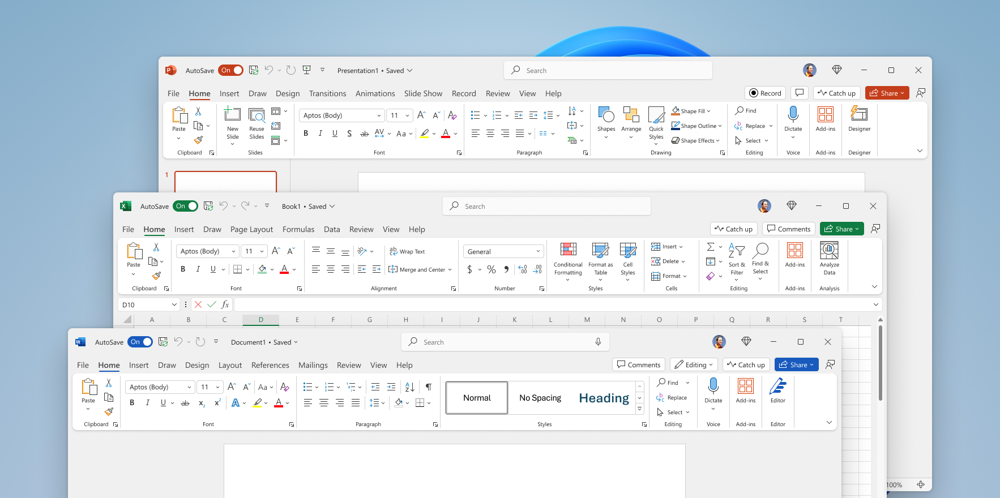
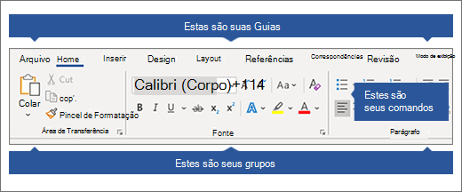
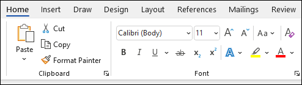
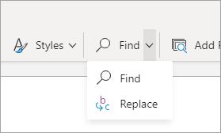
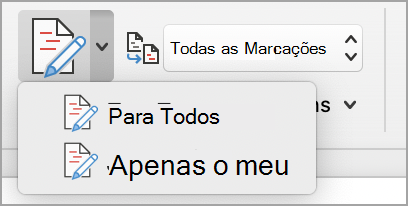
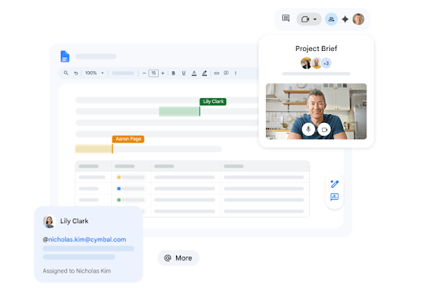
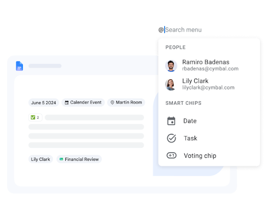
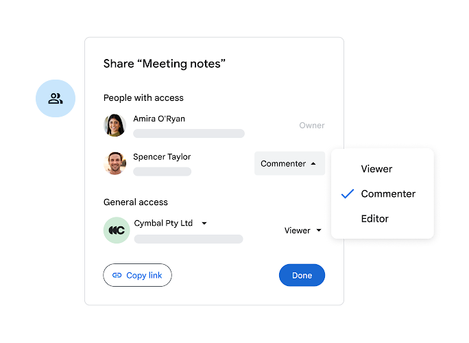
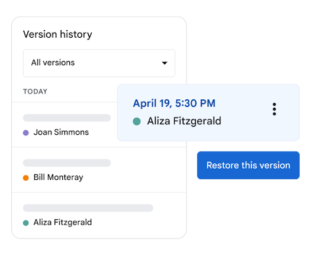
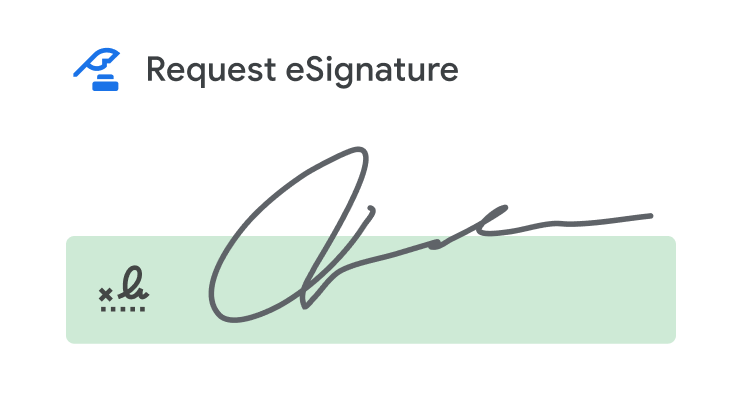

Aula 04 • Documentos profissionais
Microsoft Word
e Google Docs
Interfaces, comandos e produção de documentos para a rotina imobiliária
Interfaces, comandos e produção de documentos para a rotina imobiliária
Localizar as áreas de trabalho do Word e do Google Docs.
Diferenciar guias, grupos de comandos e comandos no Word.
Usar menus, barra de ferramentas e colaboração no Google Docs.
Produzir documentos claros e seguros para o setor imobiliário.
Propostas, cartas, apresentações do imóvel e respostas formais ao cliente.
Relatórios de visita, atas, checklists, pareceres e fichas cadastrais.
Minutas, contratos, termos, declarações e documentos para assinatura.
| Aspecto | Microsoft Word | Google Docs |
|---|---|---|
| Organização da interface | Guias, Faixa de Opções, grupos e comandos | Menus, barra de ferramentas e painéis laterais |
| Salvamento | Arquivo local ou nuvem pelo OneDrive e SharePoint | Salvamento automático no Google Drive |
| Ponto forte | Diagramação detalhada e recursos avançados de documentos longos | Colaboração simples e edição direta no navegador |
| Formato de trabalho | DOCX, com exportação para PDF e outros formatos | Documento Google, com download em DOCX, PDF e outros formatos |
A escolha depende do fluxo da equipe, da necessidade de colaboração e do nível de controle sobre o layout.

Começa sem estrutura pronta. O usuário define estilos, margens, cabeçalhos e demais elementos.
Oferece uma estrutura reutilizável. Pode servir de base para proposta, relatório, carta ou currículo.
Proposta_Imovel_Centro_ClienteExemplo_v01.docx
Evite nomes como “documento novo final 2”.

A aparência varia um pouco entre Windows, macOS e Word para a Web.

Categoria ampla: Página Inicial, Inserir, Layout, Referências, Revisão ou Exibir.
Conjunto de comandos relacionados. Na Página Inicial aparecem Fonte, Parágrafo e Estilos.
Botão, caixa ou lista que executa a ação desejada.

Cria uma cópia temporária. Atalho: Ctrl + C.
Remove do local para mover. Atalho: Ctrl + X.
Insere o conteúdo. Atalho: Ctrl + V.
Evita trazer formatação indesejada de páginas da internet.
Se nada estiver selecionado, o comando afeta o texto digitado dali em diante.
| Comando | O que controla | Exemplo imobiliário |
|---|---|---|
| Alinhamento | Esquerda, centro, direita ou justificado | Corpo de uma proposta alinhado à esquerda |
| Espaçamento | Distância entre linhas e entre parágrafos | Separação regular entre seções de um relatório |
| Recuo | Posição do parágrafo em relação às margens | Cláusula destacada ou citação |
| Listas | Marcadores, numeração e níveis | Características do imóvel ou etapas da vistoria |
| Mostrar tudo ¶ | Marcas de parágrafo, espaços e quebras | Diagnóstico de páginas vazias e espaçamentos estranhos |
Nome principal do documento.
Criam níveis de seção e alimentam o sumário automático.
Padrão do corpo do texto.
Alterar o estilo uma vez atualiza todos os trechos que o utilizam.

Encontra nome, endereço, valor ou cláusula dentro do documento.
Troca uma ocorrência ou várias. Revise antes de usar “Substituir tudo”.
Organiza áreas, valores, condições e cronogramas.
Apresenta imóvel, planta, mapa ou logotipo.
Conecta ao anúncio, mapa, tour virtual ou regulamento.
Repete marca, identificação e numeração.
Use uma quebra de página. Vários Enters podem mudar o layout quando o texto cresce.

Analisa ortografia, gramática e clareza.
Registra dúvidas e orientações sem alterar o corpo do texto.
Marca inserções e exclusões para aceitar ou rejeitar depois.
Ajuda a identificar problemas para leitores de tela e outros usuários.
| Etapa | Área do Word | Ação |
|---|---|---|
| 1. Nomear e salvar | Barra de título e Arquivo | Definir nome, local e formato |
| 2. Estruturar | Página Inicial, grupo Estilos | Aplicar Título 1 e Título 2 |
| 3. Formatar | Grupos Fonte e Parágrafo | Ajustar hierarquia e leitura |
| 4. Acrescentar dados | Guia Inserir | Adicionar tabela, imagem e links |
| 5. Configurar página | Guia Layout | Margens, orientação e quebras |
| 6. Revisar | Guia Revisão | Editor, comentários e alterações |
| 7. Entregar | Arquivo e Compartilhar | Gerar PDF ou conceder acesso |

Cada menu abre uma lista de comandos. A organização privilegia o tipo de ação.
| Menu | Exemplos de comandos | Uso no documento imobiliário |
|---|---|---|
| Arquivo | Novo, abrir, fazer cópia, baixar, imprimir | Gerar uma versão PDF para envio |
| Editar | Desfazer, copiar, colar, localizar e substituir | Corrigir dados repetidos |
| Inserir | Imagem, tabela, link, cabeçalho, número de página | Adicionar dados e fotos do imóvel |
| Formatar | Texto, parágrafo, listas, colunas e estilos | Padronizar a apresentação |
| Ferramentas | Ortografia, contagem, digitação por voz e preferências | Revisar o texto e conferir extensão |
| Extensões | Complementos e automações instaladas | Usar integrações autorizadas pela organização |
A barra de ferramentas reorganiza os comandos conforme o espaço disponível. Alguns aparecem no botão de mais opções.
Use a pesquisa de ferramentas ou abra o menu correspondente quando não encontrar um comando.
O zoom do navegador e o zoom do documento são controles diferentes.

Identificam quem está no documento e onde cada pessoa edita.
Permitem discutir um trecho e atribuir uma pendência.
Conectam pessoas, arquivos, datas e outros elementos do Workspace.

Visualiza, sem comentar ou alterar o documento.
Visualiza, comenta e pode sugerir, conforme o recurso disponível.
Altera o conteúdo e pode realizar outras ações permitidas.
Altera diretamente o documento. Use quando a pessoa tem responsabilidade sobre a redação final.
Apresenta mudanças que o responsável pode aceitar ou rejeitar.
Registra dúvida, orientação ou decisão sem modificar o texto.

Histórico ajuda a recuperar o trabalho, mas não substitui a revisão dos dados antes do envio.
Mantenha o documento no Drive e compartilhe com a permissão correta.
Baixe em formato Microsoft Word (.docx) e confira a formatação.
Baixe em PDF para preservar melhor a apresentação visual.

| Parte | Conteúdo | Recurso recomendado |
|---|---|---|
| Identificação | Empresa, responsável, cliente e data | Cabeçalho, tabela simples ou campos |
| Título | Finalidade clara do documento | Estilo Título |
| Seções | Imóvel, condições, responsabilidades e anexos | Título 1 e Título 2 |
| Dados comparáveis | Áreas, valores, prazos e itens | Tabela com cabeçalho |
| Elementos visuais | Foto, mapa, planta ou logotipo | Imagem com legenda e texto alternativo |
| Fechamento | Contato, observações, assinaturas e versão | Rodapé, revisão e PDF final |
No Docs, o salvamento é automático, mas o atalho é reconhecido pelo navegador.
Volta a ação anterior.
Encontra texto no arquivo.
Troca texto com revisão.
Aplica ou remove ênfase.
Insere ou edita um hiperlink.
Seleciona o conteúdo do documento.
Inicia uma nova página de modo controlado.
0/10
Conclua o quiz para ver o resultado.
Área, guia ou menu, grupo e comando ajudam a encontrar qualquer ferramenta.
Estilos, parágrafos e tabelas produzem consistência e facilitam a revisão.
Escolha a permissão correta, proteja dados e confira o PDF antes do envio.
Bilhete de saída: escreva o nome de uma área da interface e um comando que você usará na atividade imobiliária.
Use os botões, as setas do teclado, Page Up e Page Down. Home vai ao primeiro slide e End ao último.
Pressione F ou use o botão Tela cheia. Esc fecha janelas e sai da tela cheia.
Marque a lista prática, explore os cenários e responda às dez questões do quiz.
As imagens são arquivos estáticos e se ajustam à tela sem elementos desenhados sobre elas.